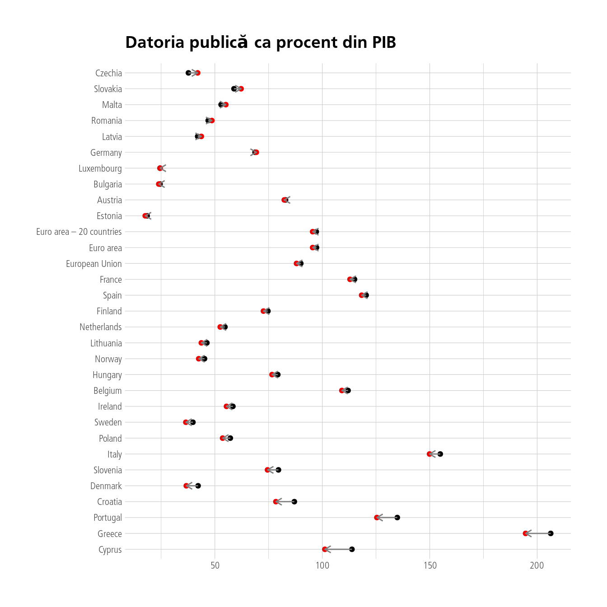

În toate țările a crescut datoria publică, iar România în rând cu media.
Author
Petre Buciu
Published
June 3, 2021
Datoria publică este un subiect controversat și creșterea recentă a datoriei publice a României este un fapt pus într-o anumită lumină de unii comentatori politici. Mai exact se caută prezentarea acestui fenomen ca și cum ar fi cauzat factori strict locali: voința partidului de la guvernare, “străinii”, UE, freza prim-ministrului, etc. Realitatea este că datoria publică a crescut peste tot în Europa, în mod universal, nicio țară nu a trecut prin anul 2020 fără să adauge la ponderea datoriei în PIB.
Să punem rezultatele și sub forma unui tabel. Delta măsoară diferența dintre procentele lunii octombrie (ultimul punct pentru care avem datele) 2021 față de aceeași lună a anului 2020. Avem astfel acoperită mare parte din perioada pandemiei și a măsurilor fiscale care au fost luate cu ocazia ei.
Arată codul
x %>%filter(grepl("-10-", time)) %>%spread(time, values) %>%mutate(Delta =`2021-10-01`-`2020-10-01`) %>%arrange(desc(Delta)) %>%select(-4) %>% gt::gt() %>% gtExtras::gt_theme_538() %>%tab_header(title ="Datoria publică în Europa", subtitle="Sursa: Eurostat, teina230") %>%tab_style(cell_fill(color="#EEA100"), cells_column_labels()) %>% gtExtras::gt_highlight_rows(rows=c(5, 13))
Datoria publică în Europa
Sursa: Eurostat, teina230
geo
2020-10-01
2021-10-01
Delta
Czechia
37.7
42.0
4.3
Slovakia
58.9
62.2
3.3
Malta
52.9
55.1
2.2
Latvia
42.0
43.7
1.7
Romania
46.9
48.6
1.7
Germany
68.7
69.3
0.6
Luxembourg
24.5
24.5
0.0
Bulgaria
24.5
23.9
-0.6
Austria
82.9
82.3
-0.6
Estonia
18.5
17.6
-0.9
Euro area – 20 countries
97.2
95.5
-1.7
Euro area
97.3
95.5
-1.8
European Union
90.0
88.0
-2.0
France
115.0
112.9
-2.1
Finland
74.7
72.6
-2.1
Spain
120.4
118.3
-2.1
Netherlands
54.7
52.5
-2.2
Lithuania
46.3
43.7
-2.6
Hungary
79.3
76.6
-2.7
Norway
45.2
42.5
-2.7
Belgium
112.0
109.1
-2.9
Ireland
58.4
55.4
-3.0
Sweden
39.8
36.5
-3.3
Poland
57.2
53.6
-3.6
Italy
154.9
149.9
-5.0
Slovenia
79.6
74.5
-5.1
Denmark
42.2
36.7
-5.5
Croatia
87.0
78.4
-8.6
Portugal
134.9
125.4
-9.5
Greece
206.3
194.6
-11.7
Cyprus
113.8
101.2
-12.6
România ocupă locul al cincilea în acest tabel, din treizeci de țări disponibile. Se poate spune că creșterea ei, de doar 1.7 puncte procentuale, iese în evidență în peisaj european.
Arată codul
x %>%filter(grepl("2021-10-|2020-10-", time)) %>%spread(time, values) %>%mutate(delta =`2021-10-01`-`2020-10-01`) %>%mutate(geo =fct_reorder(geo, delta)) %>%ggplot(aes(x=geo, y=`2020-10-01`)) +geom_point() +coord_flip() +geom_point(aes(x=geo, y=`2021-10-01`), colour="red2") +geom_segment(aes(x=geo, xend=geo, y=`2020-10-01`, yend=`2021-10-01`), colour="grey50", arrow =arrow(angle=30, length =unit(2, "mm"))) +labs(title ="Datoria publică ca procent din PIB", x=NULL, y=NULL, colour="Țară")

Graficul confirmă și vizual același lucru, dar mai greu de citit întrucât diferenţele sunt mici. Nu mai punem la socoteală că România a intrat în această perioadă și cu un deficit bugetar semnificativ.